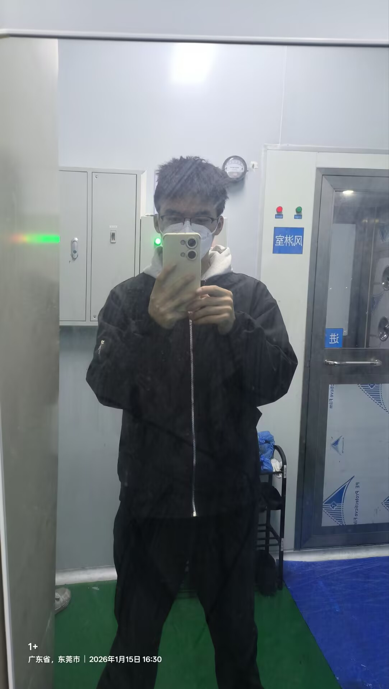

人物介绍
这是他喜欢的歌
这是他的照片
赵庆明，
，中国国籍，武汉理工大学在读学生，致力于专业学习与综合能力提升，恪守“厚德博学、追求卓越”的校训精神，在学术实践与校园成长中持续精进。
人物简介
赵庆明现就读于武汉理工大学，依托学校深厚的工科底蕴与优质育人平台，系统开展专业学习与科研实践。在校期间，秉持严谨治学、务实进取的态度，专注学业深耕与能力培养，积极融入校园学术与创新生态，以扎实学识与良好素养践行青年学子的责任与追求，展现新时代理工学子的精神风貌。
院校背景
武汉理工大学是教育部直属、由教育部与交通运输部、国家国防科技工业局共建的全国重点大学，办学历史可追溯至1898年，是国家“211工程”和“双一流”建设高校，以材料科学与工程、船舶与海洋工程等优势学科享誉国内外，为国家建材建工、交通、汽车三大行业培养大批高层次人才，被誉为“卓越工程师摇篮”。